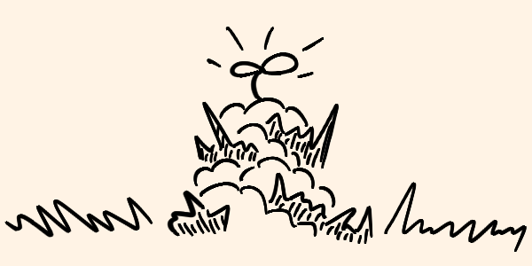

No sé cuánto tiempo ha pasado desde la Gran Caída. Los días son eternos y las noches, aún más largas. Desde que la humanidad colapsó, desde que esos... seres comenzaron a deambular, he estado observando. Oculto en un refugio improvisado, he estudiado su transformación, el cambio definitivo de lo que alguna vez fueron humanos. No queda rastro de lo que alguna vez conocimos como humanidad en ellos. Lo que recorre las calles ahora es algo totalmente diferente, algo negro, viscoso, y despiadado.
Recuerdo la primera vez que vi a alguien infectado. Todavía tenía una apariencia humana, aunque su piel estaba salpicada de manchas oscuras que parecían extenderse lentamente, cubriendo cada centímetro de su cuerpo. Ahora, esas criaturas han dejado atrás cualquier vestigio de humanidad. Son completamente negras, sus cuerpos parecen estar hechos de una sustancia líquida, como si fueran sombras animadas que se deslizan en la oscuridad. He visto de cerca uno de esos cuerpos, desde la distancia segura de mi escondite, y lo que antes eran músculos y huesos se han transformado en una masa que parece fluir y adaptarse al entorno.
No caminan, se deslizan, avanzan con movimientos que resultan antinaturales para alguien que aún conserva recuerdos de lo que es ser humano. Sus extremidades se alargan y retuercen con una flexibilidad imposible, y en ocasiones parecen fusionarse con el suelo, como si fueran una extensión del mismo. Se desplazan en silencio, apenas dejando rastro de su presencia, como si su esencia misma fuera una parte de la penumbra que lo envuelve todo.
La primera vez que presencié uno de sus ataques fue desde la seguridad de una ventana rota en un segundo piso. Una de esas criaturas se abalanzó sobre su presa con una fuerza que jamás había visto en un ser humano. La violencia fue brutal y rápida. No usan armas, no las necesitan. Todo su cuerpo parece ser una herramienta de destrucción. Sus manos se han convertido en garras afiladas, capaces de destrozar carne y hueso con un solo golpe. He visto a uno de ellos levantar a un hombre del suelo con una sola mano, como si no pesara más que una hoja. La fuerza de su ataque es abrumadora, y rara vez falla. Siempre apuntan al cuello, al torso, a los puntos vitales.
No he encontrado un patrón claro en su ataque, pero parece que atacan con la misma ferocidad a cualquier cosa que se mueva. No muestran piedad, no parecen reconocer la diferencia entre amigo o enemigo, solo destruyen. Y cuando atacan en grupo, es aún peor. He visto a varias criaturas coordinarse, rodeando a su objetivo y atacando desde todos los ángulos. No emiten ningún sonido, no hay gritos de guerra, solo el golpe de sus cuerpos negros y líquidos chocando contra su presa.
Lo que más me aterra de estas criaturas no es su fuerza, sino la forma en que cazan. Me ha quedado claro que han perdido la vista. Sus ojos, si es que alguna vez los tuvieron, están cubiertos por esa sustancia negra que parece absorber la luz. Sin embargo, rastrean con una precisión que no parece natural. He observado cómo inclinan sus cabezas, como si estuvieran escuchando atentamente. Una vez que perciben un sonido, aunque sea el más leve, se mueven directamente hacia él. Puedo decir con certeza que son cazadores del sonido.
He tenido que aprender a vivir en silencio absoluto, conteniendo mi respiración cuando uno de ellos pasa cerca, evitando incluso el crujido de una madera suelta bajo mis pies. Un simple susurro o el sonido de una lata rodando es suficiente para atraerlos. Se mueven en grupo, coordinados, como si compartieran una conciencia común que los guía. He notado que, una vez que fijan su atención en un objetivo, no lo dejan ir hasta que han rastreado cada movimiento, cada ruido, hasta atraparlo. No hay forma de despistarlos, no hay forma de engañarlos. Son persistentes y, lo peor de todo, pacientes.
Lo más macabro es lo que ocurre después del ataque. No matan por matar. Hay algo en su comportamiento que es... sistemático. Una vez que han derribado a su presa, se inclinan sobre ella, rodeándola por completo con sus cuerpos negros y fluidos. No es un espectáculo fácil de ver, pero he tenido que obligarme a hacerlo, por mi propia supervivencia, para entender qué son realmente estas cosas.
Los he visto absorber a sus víctimas, literalmente. La sustancia negra que los cubre parece expandirse, rodeando el cuerpo inerte de la persona que han derribado. Lo que ocurre entonces es una especie de fusión. He presenciado cómo la carne y los huesos de la víctima desaparecen lentamente, siendo devorados por esa negrura, como si fueran tragados por un abismo sin fondo. La criatura parece hincharse brevemente, como si absorbiera algo esencial de su presa, antes de volver a su tamaño original.
He intentado seguir a algunas de estas criaturas después del consumo, esperando algún cambio en su comportamiento o en su apariencia. No hay cambios visibles, pero hay algo en sus movimientos que se vuelve más decidido, más enfocado, como si hubieran adquirido algo de las víctimas que devoraron. Quizás sea más fuerza, quizás sea memoria, no lo sé. Solo puedo suponer que el parásito que los controla, esa sustancia negra y pegajosa, necesita algo de sus víctimas, algo que lo fortalece.
¿Qué es este parásito? ¿Por qué transforma a las personas en estas criaturas? No tengo respuestas, solo preguntas. Mis observaciones no han sido suficientes para comprender por completo su naturaleza. He visto cómo el parásito se adhiere a sus cuerpos, cómo se extiende, cómo consume, pero nunca cómo empezó ni por qué. Todo lo que sé es que no son humanos, no más. Son cazadores perfectos, depredadores diseñados para erradicar todo a su paso, y lo hacen sin piedad ni remordimiento.
Los días pasan y la esperanza de entender qué son o de detenerlos parece cada vez más lejana. Me escondo en las sombras, esperando un día en que quizás, solo quizás, algo o alguien encuentre una manera de detener esta pesadilla. Porque, hasta ahora, cada enfrentamiento solo confirma lo que más temo: la humanidad ha sido sustituida, y en su lugar, estas criaturas, estas sombras, han tomado el control del mundo.
